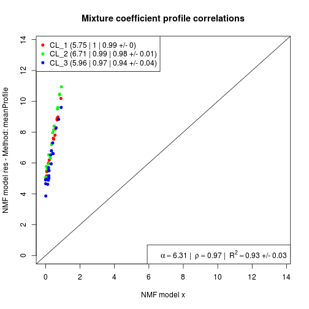
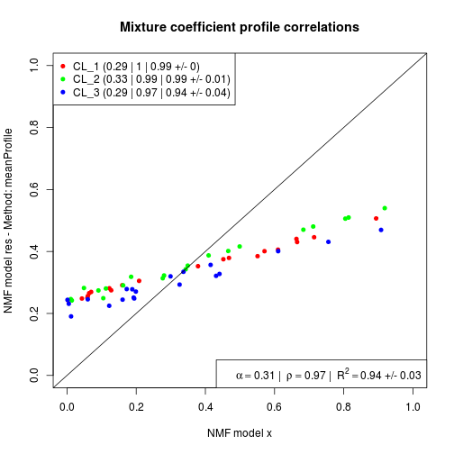

gedAlgorithm.meanProfile(y, x, scale = FALSE, ...)
MarkerList
object.The algorithm ‘meanProfile’ uses a set of known marker genes for each cell type to compute a mean expression profile within each cell type separately.
This is in essence the preliminary step proposed by Kuhn et al. (2011) in order to compute a proxy for the actual cell proportions.
The average profiles are expected to be correlate well with the actual proportions, provided that the individual markers gene expression profiles are not too noisy and that the markers are indeed markers.
Important: this method does not compute
cell-specific differential expression as described in
Kuhn et al. (2011), but only the cell proportion
proxy. Hence, the result only contains estimated
proportions (accessible via coef) and an
empty basis signature matrix.
Kuhn A, Thu D, Waldvogel HJ, Faull RLM and Luthi-Carter R
(2011). "Population-specific expression analysis (PSEA)
reveals molecular changes in diseased brain." _Nature
methods_, *8*(11), pp. 945-7. ISSN 1548-7105,
# random data with markersx <- rmix(3)m <- getMarkers(x)# compute proxy proportionsres <- ged(x, m, method='meanProfile')# no cell-specific signaturesdim(res)[1] 0 20 3#NB: estimates are not scaled to sum up to oneprofplot(x, res)
profplot(x, res, scale=TRUE)